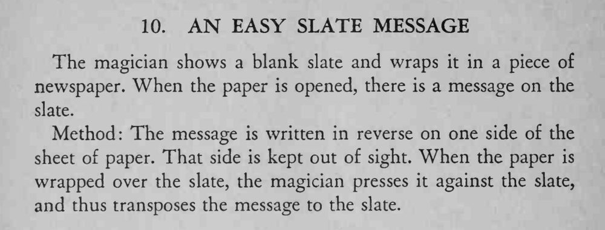

魔术师把一块空白石板用报纸包起来，打开报纸时，石板上已经出现了信息。
反写的字迹要预先压印清楚，包裹时用力要均匀。

The magician shows a blank slate and wraps it in a piece of newspaper. When the paper is opened, there is a message on the slate. Method: The message is written in reverse on one side of the sheet of paper. That side is kept out of sight. When the paper is wrapped over the slate, the magician presses it against the slate, and thus transposes the message to the slate.